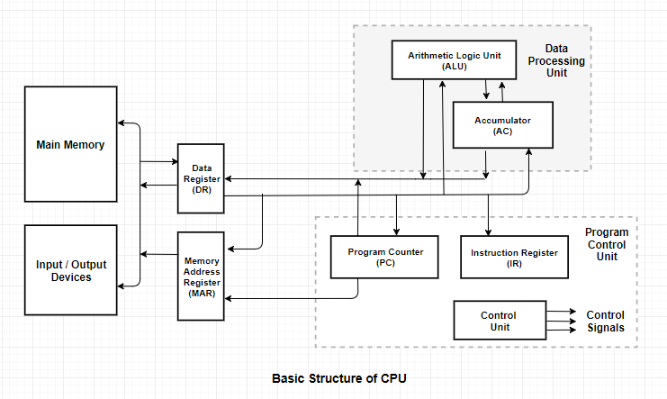

The Data Processing Unit (ALU & AC) and the Control Unit of a computer system are jointly known as the central processing unit.
The design of CPU is based on Von Neumann architecture which is proposed by Sir John Von Neumann and the computer is known as IAS computer.
The IAS computer consists of registers and the set of instructions are used to perform different operations.
The basic structure of CPU is as follows:

Arithmetic Logic unit (ALU) : The actual processing of the data and instruction are performed by Arithmetic Logical Unit.
It performs arithmetic and logical operations such as multiplication, division, subtraction, addition ,etc.
Data is transferred to ALU from storage unit when required. After processing the output is returned back to storage unit for further processing or getting stored.
Control Unit : Control Unit is responsible for co-ordinating various operations using time signal.
The control unit determines the sequence in which computer programs and instructions are executed.
It also acts as a switch board operator when several users access the computer simultaneously.
CPU consists of following registers :
Accumulator (AC) : It interacts with ALU and stores input or output result.
Program Counter (pc) :It contains the address of the next instruction to be executed.
Instruction Register (IR) :It holds the current Instruction.
Data Register (DR) :It act as a buffer storage between main memory and CPU
Memory Address Register (MAR) : It provides address of memory location which indicates the where the data is present.